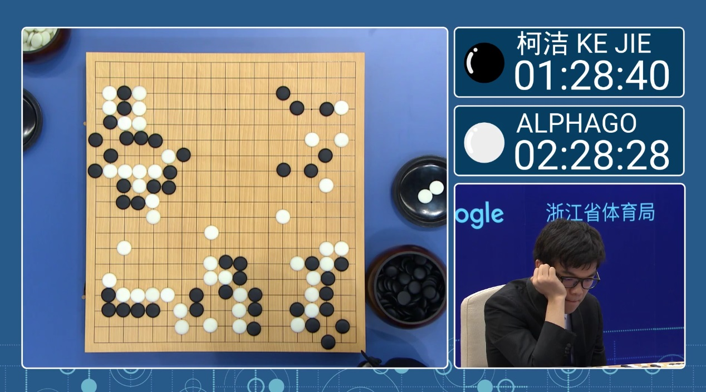
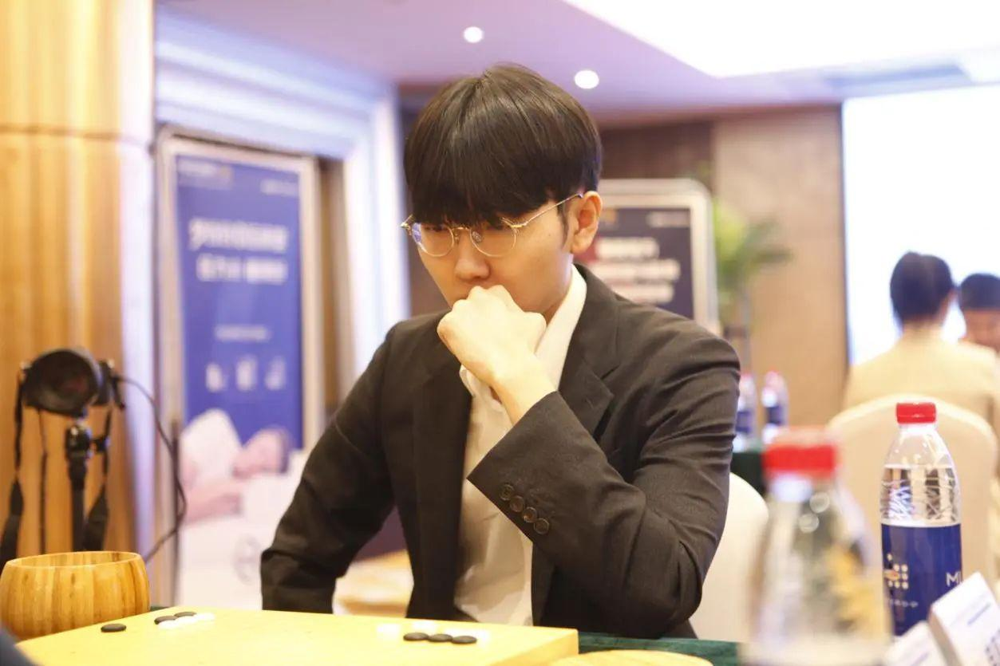
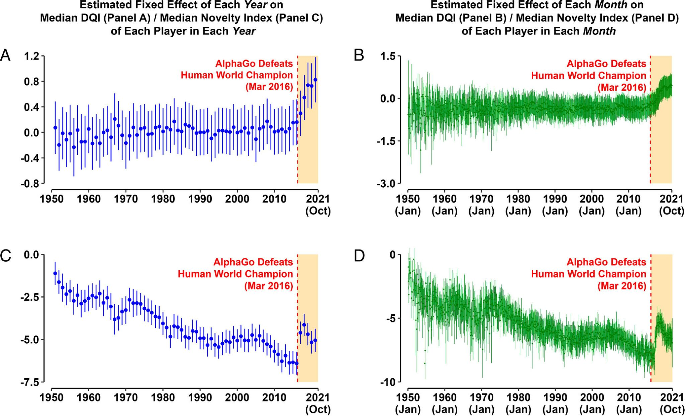
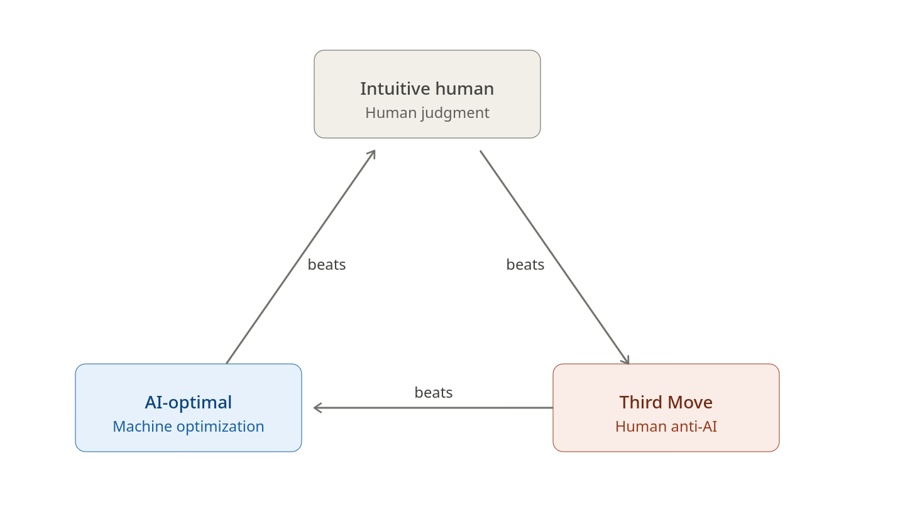

The Meta Strategy of Automated Planning
War Planning After COAGEN AI
Modeled after the artificial intelligence that achieved historic victories in the ancient Chinese game of Go, newly built DARPA AIs — named SAFE-SIM and SCEPTER — can now generate battle plans at a speed and scale no human staff can match, and there is speculation that the People's Republic of China is not far behind.
In a world where human war plans compete with AI war plans, the strengths and weaknesses of each create a meta-battle of strategies that the commander must navigate to win on the modern battlefield.
The New Era of Algorithmic War
SAFE-SIM and SCEPTER are completely different from LLM-AIs like ChatGPT. Modeled after Google DeepMind's AlphaGo AI — widely considered the landmark achievement of AI when it was created in 2016 — the sons of AlphaGo simulate and dynamically test novel battle plans against each other, brute-force processing over 100,000 courses of action an hour autonomously.
We can call this type of AI Course of Action Generating Artificial Intelligence, or COAGEN AI. COAGEN AI is any AI-driven autonomous warfare system that runs vast numbers of high-fidelity wargame simulations and algorithmically picks the strategy most likely to win. When COAGEN AI is available to both adversaries, real world conflict opens to a level of meta strategy that professional Go confronted over ten years ago: knowing which type of plan to execute, and when.
How Go Solved It
Go may be the most strategically complex board game ever devised, and with more possible positions than atoms in the observable universe, was long considered the last game AI could not master. In 2016, an AI created by Google called AlphaGo publicly defeated the world's most talented Go players in what is still seen today as a landmark in AI development. After Lee Sedol's defeat, the human Go world seemed like it would forever be dominated by the raw strength of AI. Sixty more pros consecutively fell to the next version of AlphaGo shortly after. This culminated in the crushing defeat of China's Ke Jie (커제), then the world's strongest player. Professional Go players naturally took to studying the seemingly unstoppable way the AI played, and mimicked it.

Seven years later, Korean player Shin Jinseo (신진서) emerged as the world's strongest human player, renowned for playing with the highest AI-move match rate of any professional on earth. He came of age during the AlphaGo era and absorbed its lessons more completely than any other pro. Shin leveraged his understanding of AI to develop his own next-level strategy that pushed past the "blue dot," the AI's recommended optimal move depicted in computer Go.

The idea behind his strategy was by playing the suboptimal move that the AI would not suggest, his AI-trained human opponent must fight a battle he has not prepared for. The Korean Go world calls this 제3의 수 — the Third Move.
A 2023 PNAS study confirmed empirically the effectiveness of this tactic and its adoption by Go professionals today. After the advent of AlphaGo, human players increasingly broke from historical move sequences earlier and more often, and novel moves drove the bulk of improvement in decision quality.

The Third Move tactic opened up a new dimension of strategy in the game of Go: meta moves. Meta moves are effective not because they come from the AI, but become effective because AI exists on the cognitive battlefield. High-level players now navigate a rock-paper-scissors choice: the intuitive human move, the AI's optimal move, or the novel but suboptimal human move that anticipates the AI — the Third Move. One of the most important decisions a professional player now faces is which of these three types of moves to employ, and his strategy must carefully consider how to make that decision.
The 3-COA Meta Strategy
With the arrival of COAGEN AI, the battlefield commander now faces that same rock-paper-scissors dilemma. He must choose between the intuitive human plan, the optimal COAGEN AI plan, or the suboptimal, human-conceived plan designed to disrupt the adversary's COAGEN AI plan.
Each type of plan is uniquely vulnerable to one type, and overwhelmingly advantageous to another.
The AI plan is effective against the intuitive human plan because no human staff can replicate the optimization depth of 100,000+ simulated COAs. The COAGEN AI commander gains advantages in tempo and speed of action as his automated decision cycle completes while his human-plan opponent is still planning.
The Third Move is effective against the AI plan because a genuinely novel COA falls outside the decision space COAGEN AI has already modeled, leaving the enemy commander to improvise without the tool his planning process was built around. The commander gains initiative as he has imposed the fight on cognitive terrain the enemy AI has not mapped.
The intuitive human plan is effective against the Third Move because the commander gains decisive advantages in the principles of objective and economy of force, as the Third Move plan has committed resources to exploit a course of action that is not being executed.

Selecting the Winning Meta COA
In order to select the winning plan, the commander must employ his intelligence assets to answer three information requirements:
1) Does the enemy have COAGEN AI? — Confirms the adversary's COAGEN AI capability.
2) What data is the enemy feeding its COAGEN AI with? — Confirms what the adversary COAGEN AI will be planning for.
3) Will the enemy execute its COAGEN AI's plan? — Confirms the adversary's likely course of action.
The commander must prioritize answering these information requirements given the decisive risk of an adversary COAGEN AI plan, and continue to reassess them throughout the fight. He must necessarily resource the required intel assets on a persistent basis, which may impact his collection capacity on his own forces. Additionally, he will need to resource intel collection against both operational ISR demands and the unique demand of his chosen Meta COA type.
The intuitive human COA is the most ISR-intensive. Collection feeds PIRs, supports targeting, and enables decision cycles persistently throughout execution. Therefore, the commander who chooses an intuitive plan makes a hard commitment to sustained, high-volume ISR for the entire operation. He must either accept that ISR will be the pacing function for every decision cycle — meaning his tempo will be no faster than his collectors can refresh the picture — or he must overmatch the enemy so decisively in ISR capacity that this burden becomes sustainable. If his ISR enterprise is degraded, attrited, or outmatched, the intuitive plan stalls mid-stride, leaving forces committed without a clear picture. The plan is only as resilient as the collection architecture that feeds it.
The AI COA shifts that demand from decision-support to deviation-detection. COAGEN AI knows what to reconnoiter to confirm the enemy remains in the modeled space. Therefore, the commander who adopts the AI's plan trades breadth of awareness for economy of effort. He can strip away broad, decision-support collection and focus scarce ISR on a narrow set of deviation indicators, watching only for the specific signatures that would invalidate the model. This frees assets for strike support, force protection, or deep targeting during execution. The cost is fragility: his awareness is now linked to a model of the enemy's behavior. If the enemy's next move falls outside that model, the commander risks not seeing it until the deviation has already inflicted cost. He gains speed and efficiency, but at the price of being surprised by anything his AI wrote off.
A Third Move COA concentrates ISR demand into the planning phase to confirm an adversary's decision to use COAGEN AI, but may reduce it once the operation begins, as a disrupted adversary improvising without his AI is reacting to his opponent's initiative rather than executing a synchronized plan of his own. Therefore, the commander who executes a Third Move is making a front-loaded wager. He must concentrate ISR in the planning phase to satisfy himself that the enemy is, in fact, dependent on its COAGEN AI and that its model has the brittleness he intends to exploit. If that bet pays off and the enemy's synchronized plan collapses into reactive improvisation, the commander can shift ISR from broad surveillance to lethal exploitation, finding and finishing the disoriented enemy faster than they can recover. The Third Move's ISR plan demands a decision early and punishes the commander who guesses wrong about how long the enemy will stay off balance.
Thus, the selection of the winning Meta COA — a choice between the optimal, intuitive, or disruptive Third Move plans — is intrinsically linked to the strategic allocation of ISR assets. These are the two decisive variables of the meta strategy in execution, and must be successfully navigated on the new cognitive battlefield the commander must fight.
Conclusion
Rather than end Go, AI created a battlefield that human ingenuity weaponized to create a new level of cognitive fighting. Likewise, the commander who can see the meta strategy created by COAGEN AI will have the decisive edge over the commander using the machine to replace him.